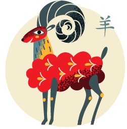

The goat was the eight in the Jade Emperor's race. People born in the year of the dog are said to be kind, sincere and compassionate but also quiet and somewhat shy.
People born in the years 1955, 1967, 1979, 1991, 2003, and 2015 were born in the year of the goat.
